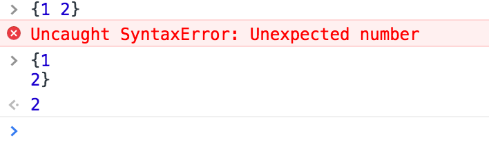

主要内容
- ECMAScript规范的介绍及制定流程
- 规范中一些有意思的点
ECMAScript规范是什么？
- ECMAScript
- 是一种由Ecma国际通过ECMA-262标准化的脚本程序设计语言，它的具体实现有JavaScript、JScript、ActionScript
- Ecma国际
- Ecma国际是一个制定通信技术、消费电子等领域相关标准的一个组织。其会员目前有Google、HP、Hitachi、IBM、Intel、Konica Minolta、MircroSoft、Paypal、Yahoo等.
- ECMA-262
- ECMA在1997年发布的262号标准。
ECMAScript规范从哪里来？
- ECMAScript规范由Ecma国际的TC39委员会制定，其中第一版在1997年发布，到目前为止有7版：ES1(1997)、ES2(1998)、ES3(1999)、ES5(2009)、ES5.1(2011)、ES6(2015)、ES7(2016)
- 从ECMAScript2016(ES7)开始是每年发布一个版本，并且成文标准要从事实标准中诞生，实现先于标准存在
ECMAScript规范如何制定?
- TC39委员会每两月开一次会，讨论各个阶段的提议能否进入下一阶段
- 每年6月份会开General Assembly，表决是否通过当年的ECMA-262标准。
- 规范中的每个特性一共要经过5个阶段，最终才会写入规范

5个阶段说明
- stage0(Strawman)，只要注册会TC39的会员，就可以提交
- stage1(Proposal)，提供demos/polyfills。说明TC39委员会愿意考虑这提议
- stage2(Draft), 完善的说明，必须包含2个实验性的具体实现，其中一个可以是用转译器实现的，例如Babel
- stage3(Candidate)，规范文档，评审人和ECMAScript的编辑要在规范上签字，至少要有两个符合规范的具体实现
- stage4(Finished)，完成阶段，必须有2个实现通过test262测试，ECMAScript的编辑必须规范上的签字
ECMAScript 2016 总体介绍
- 共26章+7个附录，共586页
- 1-5章主要是讲规范本身的历史、引用、符号约定等内容
- 6-9章分别将数据类型、抽象操作、执行上下文、对象的内部方法
- 10-16章是对ECMAScript的语法定义，比如表达式、语句、函数、类等
- 17-26章主要是ECMAScript标准库的定义，就是比如全局对象、数字、日期等标准对象的定义
ES2017
- 今年6月27号已经在General Assembly上表决通过了，包含的新特性主要有以下几个：
- Object.values/Object.entries
- String padding
- Object.getOwnPropertyDescriptors
- Trailing commas in function parameter lists and calls
- Async Functions
- Shared memory and atomics
规范中一些有意思的点
- 分号自动插入
- 隐式转换
- This
分号自动插入
- ECMAScript的语句必须以分号结尾，但是为了方便可以在源代码中不写分号。
- 之所以代码能正常运行是因为ECMAScript提供了一种自动插入分号的机制。
- 有三条主要的基本规则。
规则一
- 当从左到右解析程序代码，遇到一个任何产生式也无法识别的token，只要满足以下三个条件之一，就会在这个token之前插入一个分号：
- 这个token被至少一个行终结符和前一个token分开
- 这个token是 }
- 这个token是 ) 并且插入分号后会被解析为do-while语句的结尾分号
- 示例代码
- 
规则二
- 当从左到右解析程序代码，当输入流结束，整个输入流没法被解析为完整的ECMAScript脚本或者模块，那在输入流的末尾会自动插入分号。
规则三
- 当从左到右解析程序代码，遇到一个被部分产生式解析的token，但是这些产生式是受限产生式，在受限产生式里紧跟在行终结符或者非行终结符后的第一个token被称作受限token。当至少一个行终结符把这个token和前一个token分割开的时候，会在受限token前插入分号 然而，这有一个附加的优先条件：如果插入分号会导致语句是空语句或者插入的分号是for语句的中两个分号之一，那这个分号不会被插入。
构成受限产生式的token（++ -- break return throw yield）以及 箭头函数
return|throw|break|yield
a + b
//
return|throw|break|yield;
a+b
a = b
++c
//
a=b;
++ca
//
a
=> a
陷阱
- + - 操作符
var a = b = 1 a = b +1 - /
a = b /something/.test(a) - (
a = b (function () {})() - [
a = b [1, 2, 3].forEach()
== 操作(隐式转换)
var a = {}
a.valueOf = function () {
return 1
}
a.toString = function () {
return 2
}
var b = {}
b.valueOf = function () {
return 1
}
b.toString = function () {
return 2
}
console.log(a == b)
console.log(1 == a)
console.log(2 == a)
1 == true
1 == '1'
null == undefined
0 == null
0 == undefined
NaN == NaN
x == y 算法规范：
- 如果x和y类型相等，返回x === y的结果
- 如果x和y是null或者undefined，返回ture
- 如果x和y是Number和String，把String转换为Number再比较
- 如果x和y有一个是Boolean，把Boolean转换为Number再比较
- 如果等号一侧是Object，另一侧是String、Number、Symbol，把Object转换为Primitive再比较
- 以上条件都不满足，返回false
ToPrimitive (input,PreferredType)
- 如果input不是Object，返回input
- 如果没传PreferredType参数，设为number
- 如果是Object，并且PreferredType为string
- 如果对象有toString函数，则返回Object.toString().
- 如果对象有valueOf函数，则返回Object.valueOf().
- 如果是Object，并且PreferredType为number
- 如果对象有valueOf函数，则返回Object.valueOf().
- 如果对象有toString函数，则返回Object.toString().
This
一道面试题：
说说你对this的理解？
常见答案
- You Dont Know JS 中的总结：
- 如果是new调用，则this绑定到新创建的对象
- call或者apply调用，绑定到制定的对象
- 上下文对象调用，绑定到上下文对象
- 默认情况下，严格模式是undefined，否则就是全局对象。
- 箭头函数不适用以上规则，根据当前词法作用域来决定
思考几个问题
- this是什么？
- 如何确定this的值？
- es6+以及严格模式对确定this值时的影响？
1 this是什么？
- 是关键字
Keyword::one of break do in typeof case else instanceof var catch export new void class extends return while const finally super with continue for switch yield debugger function this default if throw delete import try - 是表达式（决定了其如何取值）
- 是词法环境中环境记录的一个属性（决定了其从何取值）
执行上下文（Execution Contexts）
- 当js开始执行时，首先是创建一个全局的执行上下文。
- js代码执行时，每次进入一段和当前执行上下文无关的代码都会创建一个新的执行上下文。
- 它有两个重要的部分：词法环境和变量环境。在初始化时这两个值一样，都是词法环境，但是变量环境不会变化，词法环境会在执行上下文中发生变化。
词法环境（Lexical Environments）
- 词法环境是由环境记录项及一个可能为空的外部词法环境的引用组成
- 环境记录项一共有5种，但是声明式环境记录项和对象式环境记录项是最基本的两种
- 声明式环境记录项
- 函数式环境记录项（继承自声明式）
- 模块环境记录项（继承自声明式）
- 对象式环境记录项
- 全局环境记录项（兼具声明式和函数式的特性）
- 声明式环境记录项
2 如何确定this值
this表达式的执行过程
ResolveThisBinding
- 获取含有this值的词法环境的环境记录项（GetThisEnvironment）
- 会和原型链一样，一直往上追溯，直到找到有this值的词法环境（最外层全局词法环境一定有）
- 返回这个词法环境记录项中的this值。
this的使用场景
- 全局环境
- 函数内部
- 构造函数
- 普通调用
构造函数
var a = {
b: function () {
console.log(this.c);
},
c: 3
}
a.b();
new a.b();
- 在规范中就是new表达式
- new fn表达式的执行过程?
- 先获取函数的[[ConstructorKind]]属性，如果是base则用(fn.prototype||Object.prototype)为原型去创建对象o。
- 如果[[ConstructorKind]]是base，则把o对象绑定为当前执行上下文的this。
- 执行函数，获取返回值result
- 如果result的类型是return
- 如果其值的类型是Object，则返回result（任何函数，只要返回Object，就直接返回）
- 如果[[ConstructorKind]]是base，则返回对象o，（普通函数，如果返回值不是Object，则返回创建的o）
- 如果返回值不是undefined，抛出TypeError异常（是返回非object和undefined的值）
- 返回执行上下文中的this值（函数体中没有return语句）
- es6+增加了class继承的语法糖，所以在new的过程中要判断继承和非继承两种情况。
- 声明了继承的class，必须先执行super表达式，从而对this进行绑定，才能使用this。
- super表达式的执行过程
- result = new GetSuperConstructor
- 给当前词法环境绑定this值为result
- 非继承的情况下，以fn.prototype为原型创建新对象o，把this值绑定为对象o。
call,apply
var c = 3;
var b = () => {
var c = 2;
console.log(this.c)};
b();
b.call({c:4});
var a = {
c: 1,
b: function () {
console.log(this.c);
}
}
var c = {
c: 3
}
[1,2,3].forEach(a.b, c)
[1,2,3].forEach(a.b, undefined)
函数的定义
- 规范中规定了三种函数：箭头函数、普通函数、方法
- 箭头函数的[[thisMode]]为lexical
- 都会把定义时的执行上下文中的词法环境作为函数的[[Environment]]属性
- 创建函数词法环境时，[[Environment]]属性值会赋值给词法环境的外部词法环境的引用
函数的执行
所有函数调用最终都是执行 F.[[Call]](thisArgument, argumentsList)
其执行过程如下：
- 创建一个新的执行上下文，并且执行上下文的词法环境是函数词法环境
- 给当前的执行上下文绑定this
- 如果函数的[[thisMode]]为lexical，返回
- 如果是严格模式，this值为thisArgument，返回
- 如果thisArgument是null或者undefined，this为全局环境的this值
- 否则设置this值为thisArgument
- 执行函数体
- 遇到this时，是执行this表达式
特殊情况（with语句）
var a = {this: 1, b: 2};
with(a) {
console.log(b);
console.log(this);
}
with语句
- 新创建一个对象式词法环境newEnv
- 把当前执行上下文的词法环境设置为newEnv
- 执行语句
- 因为对象式环境记录项中的是没有this值，所以with不能改变this值。
es6+以及严格模式对确定this值时的影响
- 箭头函数执行时，并不会绑定this值, 所以。
- 继承的class，必须执行super来绑定this值，否则会报ReferenceError
- 函数体内是严格模式时，可以给this绑定null和undefined
- 普通函数调用的时候，传入的this是undefined，所以会给this绑定undefined
下面两种情况是如何影响this值的？
- Function.prototype.bind(thisArg)
- Array.prototype.forEach(callback, thisArg)